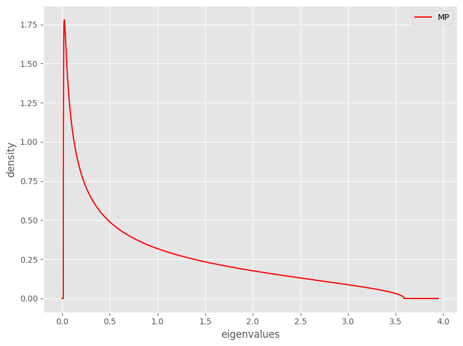
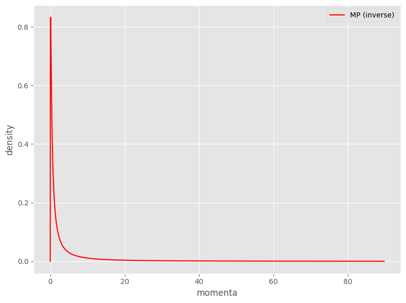
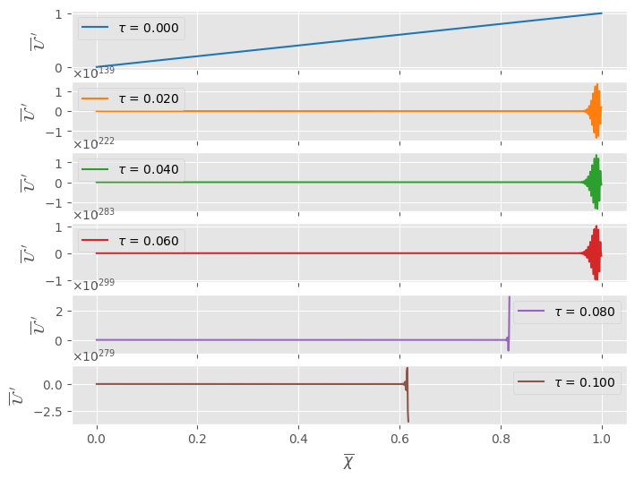
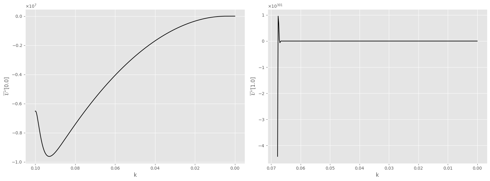

Analytical Marchenko-Pastur Simulation
In what follows, we look at the behaviour of the RG of the stochastic field theory of the analytical Marchenko–Pastur (MP) distribution.
[1]:
%load_ext autoreload
%autoreload 2
%matplotlib inline
[2]:
import numpy as np
from matplotlib import pyplot as plt
from pde import CartesianGrid, MemoryStorage, ScalarField
plt.style.use('ggplot')
from ssd import (SSD, MarchenkoPastur, TranslatedInverseMarchenkoPastur)
Functional Renormalization Group
We here simulate the behaviour of the functional RG.
[3]:
# Parameters of the distribution
ratio = 0.8
mu = [0.0, 1.0, 0.0]
xinf = 0.0
xsup = 1.0
nval = 1000
nsteps = 500
We then visualize the corresponding Marchenko-Pastur distribution:
[4]:
# Plot the Marchenko-Pastur distribution
mp = MarchenkoPastur(L=ratio)
x = np.linspace(0, mp.max * 1.1, num=10000)
y_0 = np.array([mp(xi) for xi in x])
fig, ax = plt.subplots(figsize=(8, 6))
ax.plot(x, y_0, 'r-', label='MP')
ax.set_xlabel('eigenvalues')
ax.set_ylabel('density')
ax.legend()
plt.tight_layout()
plt.show()
plt.close(fig)

We then show the inverse distribution for reference:
[9]:
# Plot the inverse Marchenko-Pastur distribution
mp_inv = TranslatedInverseMarchenkoPastur(L=ratio)
x = np.linspace(0, 1 / mp.min, num=10000)
y_0 = np.array([mp_inv(xi) for xi in x])
fig, ax = plt.subplots(figsize=(8, 6))
ax.plot(x, y_0, 'r-', label='MP (inverse)')
ax.set_xlabel('momenta')
ax.set_ylabel('density')
ax.legend()
plt.tight_layout()
plt.show()
plt.close(fig)

Simulation
We can finally simulate the evolution of the FRG equation:
[10]:
# Define the grid
grid = CartesianGrid(
[[xinf, xsup]], # range of x coordinates
[nval], # number of points in x direction
periodic=False, # periodicity in x direction
)
expression = f'{mu[0]} + {mu[1]} * x + {mu[2]} * x**2'
state = ScalarField.from_expression(grid, expression) # initial state
bc = 'auto_periodic_neumann'
# Initialize a storage
t_range = [0.0, 0.1]
dt = (t_range[1] - t_range[0]) / nsteps
dt_viz = dt * nsteps / 5
storage = MemoryStorage()
storage_viz = MemoryStorage()
trackers = [
'progress',
'steady_state',
storage.tracker(interval=dt),
storage_viz.tracker(interval=dt_viz),
]
# Define the PDE and solve
eq = SSD(dist=mp_inv, noise=0.0, bc=bc)
_ = eq.solve(state, t_range=t_range, dt=dt, tracker=trackers)
0%| | 0.0/0.1 [00:00<?, ?it/s] /home/rf265700/Code/stochastic-signal-detection/venv/lib/python3.10/site-packages/pde/fields/base.py:511: RuntimeWarning: overflow encountered in power
op(self.data, other, out=result.data)
/home/rf265700/Code/stochastic-signal-detection/venv/lib/python3.10/site-packages/pde/fields/base.py:511: RuntimeWarning: overflow encountered in multiply
op(self.data, other, out=result.data)
/home/rf265700/Code/stochastic-signal-detection/venv/lib/python3.10/site-packages/pde/fields/base.py:505: RuntimeWarning: invalid value encountered in divide
op(self.data, other.data, out=result.data)
100%|██████████| 0.1/0.1 [00:00<00:00, 4.70s/it]
Visualisation
We finally visualise the results, as functions of the stochastic time.
[11]:
# Visualize the simulation at fixed time steps
fig, ax = plt.subplots(nrows=len(storage_viz), figsize=(8, 6), sharex=True)
cmap = plt.get_cmap('tab10')
for n, (time, field) in enumerate(storage_viz.items()):
# Collect data
x = field.grid.axes_coords[0]
y_0 = field.data
# Plot the field
ax[n].plot(x, y_0, color=cmap(n), label=rf'$\tau$ = {time:.3f}')
ax[n].set_xlabel(r'$\overline{\chi}$')
ax[n].set_ylabel(r'$\overline{\mathcal{U}}^{~\prime}$')
ax[n].legend(loc='best')
ax[n].ticklabel_format(axis='y',
style='sci',
scilimits=(0, 0),
useMathText=True)
plt.show()
plt.close(fig)

[12]:
# Visualize the evolution of the field in a given position
t = []
y_0 = []
y_1 = []
for time, field in storage.items():
# Collect data
t.append(time)
y_0.append(field.data[0])
y_1.append(field.data[-1])
fig, ax = plt.subplots(ncols=2, figsize=(16, 6))
ax[0].plot(t, y_0, 'k-')
ax[0].set_xlabel('k')
ax[0].invert_xaxis()
ax[0].set_ylabel(rf'$\overline{{\mathcal{{U}}}}^{{~\prime}}[{xinf}]$')
ax[0].ticklabel_format(axis='y',
style='sci',
scilimits=(0, 0),
useMathText=True)
ax[1].plot(t, y_1, 'k-')
ax[1].set_xlabel('k')
ax[1].invert_xaxis()
ax[1].set_ylabel(rf'$\overline{{\mathcal{{U}}}}^{{~\prime}}[{xsup}]$')
ax[1].ticklabel_format(axis='y',
style='sci',
scilimits=(0, 0),
useMathText=True)
plt.tight_layout()
plt.show()
plt.close(fig)
